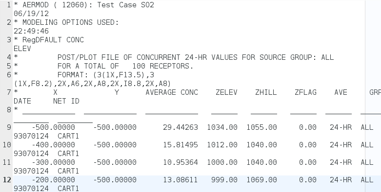
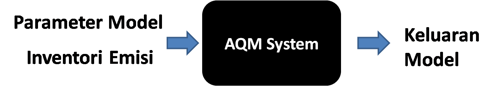

Arif Widi Nugroho 15306053


| Lokasi | Pengukuran (μg/Nm3) | Hasil Pemodelan (μg/Nm3) |
|---|---|---|
| Terminal Leuwi Panjang | 139.02 | 2.426593555 |
| Rumah Sakit Ujung Berung | 162.44 | 0.52451653 |
| Terminal Cicaheum | 180.57 | 2.426593555 |
| Alun-Alun | 139.02 | 2.426593555 |
| Margahayu Raya | 210.18 | 0.52451653 |